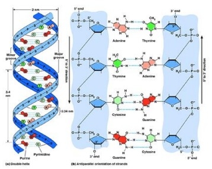
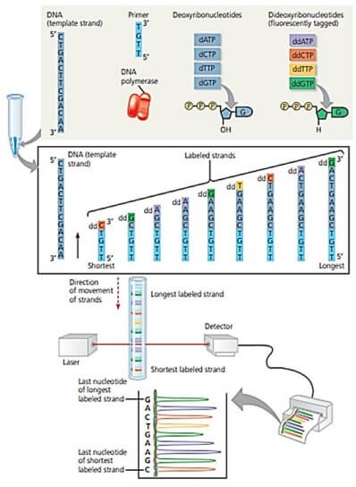
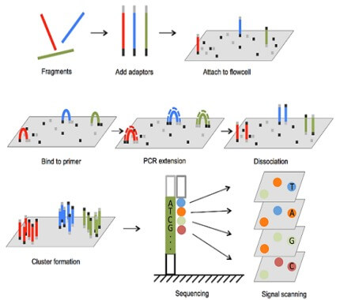
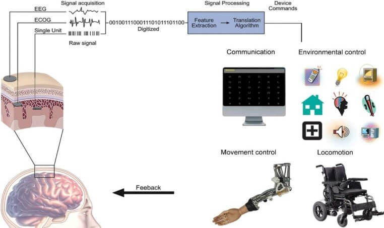

Dear readers, We are proud to announce our third issue of the Youth Science
Journal! We would like to thank all our readers for their
support and feedback to improve our upcoming publishes. We
also hope you enjoy reading this issue as our issue’s theme is
Biotechnology/Biomedical Engineering! There are a lot of
remarkable articles in this issue, covering from bionic eyes
to DNA sequencing. You may notice that our format is different
this issue. We have changed it to fit our needs and be easier
for writers.Furthermore, we are excited to announce that 16 extraordinary
students from different high schools are now part of our
writers’ crew! We have been on hiatus for the past months,
conducting training sessions for them by the senior writers.
Now, they are ready to publish their articles in our upcoming
issues. So, stay tuned!However, if you were not able to join our team, we are very
proud to announce that the Youth Science Journal is open for
publication! You can now publish your article on our website
about any topic in science through:
www.ys-journal.com/publish. Publishing a review article about
a specific topic will not only let you learn about it more,
but also share awareness for that topic! All you have to do is
to make sure that your article is following our guidelines
that are available on our website. We have already started
accepting articles and we would like to thank Ziad Khaled for
being the first to publish onto our journal!
Best Regards,
Youth Science Journal Community
Bionic Eyes: the definitive solution for visually impaired
individuals?
Ahmed Nassar STEM High School for boys 6th of
October
AbstractOnce a topic of folklore and science fiction, the notion of
retaining vision to the blind is now much closer to becoming
a reality than it ever was before. As the rise of
microelectronics and microfabrication has given way to
drastic improvements in the field of prosthetic devices. the
developing technology has given rise to a plethora of
approaches and designs to achieve said purpose. yet these
visual prosthetics operate on the same premise: relying on
intact neural circuitry whenever possible in order to take
advantage of any intact sensory processing available
[1]. Thus, lowering the need to deal with the complexity of
the neural code for perception. However, as a direct
consequence of that, it is highly unlikely that this
technology will ever see the light for patients diagnosed
with congenital blindness as they often lack a fully
developed neural perception system. Although a functioning
mechanism may very well be feasible, the rehabilitation of
the blind and reintegrating them into society will continue
to be a challenge against establishing this technology as a
viable solution for the blind.
I. Introduction
Unlike what many would assume, Prosthetic eyes have, in
fact, long been in development, with succeeding
irritations improving using more microelectrodes that
mimic the function of photoreceptors in the human cornea.
The Argus II, for example, is the second generation of a
prosthetic retinal implant with the goal of vision
restoration for patients diagnosed with Retinitis
pigmentosa. The implant study was first initiated back in
2002 in which implantation in six patients in the trial
proved to be successful. The implant has proven that the
device has the potential to allow legally blind patients
to detect light, and possibly distinguish between objects.
The device is basically meant to take place of
photoreceptors.However, the use of only 16 electrodes in
first-generation devices was the most limiting factor in
terms of vision fidelity. And henceforth the Argus II
comprised 60 electrodes providing higher resolution
images. The new device is approximately one-quarter the
size of the original device, reducing surgery and recovery
times by a significant margin.
II. Mechanism
In its very essence, the retina is merely a matrix of
nerve cells firing signals upon being struck by lights of
specific wavelengths and degrees. These neurons then send
an electrical signal to the brain’s visual cortex in which
color, light intensity, edges, and more information are
processed to try and work out what the person is seeing.
This processing part, in fact, does not simply translate
these electrical signals into images interpretable by the
human but rather edits out what may be irrelevant and
focuses on the more significant pieces of the image such
as motion: an incredible process in the very least.
Obviously, vision involves much more complexity than is
shown, but this complexity is beyond the scope of this
paper. Our primary focus here is to make it clear how a
prosthetic eye could manipulate this system in order to
produce comprehensible images. The bioniceye can be viewed
as a replacement for a retina that can no longer perform
this function.
III. Improving Vision Quality
Several approaches have been devised to improve vision
quality. The most obvious of which was to increase the
number of implanted electrodes, allowing them to target
certain neurons accounting for more pixels and thus better
resolutions. However, normal sized-micro electrodes would
not fit in such a confined space. For that reason,
attempts at shrinking the size of the microelectrodes have
been made [2]. By electrically stimulating retinal
ganglion cells using thousands of microscale
nitrogen-doped ultra-nanocrystalline diamond (N-UNCD)
feedthroughs that act as electrodes. Aside from the
expensiveness of the diamond coating, the use of such
technology has not yet proven feasible and requires
further research.Another technique is to artificially increase the
resolution by sharing electrical current between
electrodes, producing additional “virtual electrodes”.
These new techniques can possibly improve visual fidelity,
reduce blurriness, and give rudimentary control over
color: a distinctive feature of natural eyesight.The ultimate goal would be to fully understand the code
sent from the retina to the brain. Theoretically, If the
firing patterns of the receptors can be replicated, vision
will appear exactly as perceived by a healthy individual’s
eye.
IV. The Future of Bionic Eyes
Taking the technology to the next level, there is a
possibility to go beyond what a normal human eye could do.
Once the code between the retina and the brain has been
deciphered, there would be an unlimited potential for the
technology from the ability to see infra-red, night
vision, or x-ray. To magnifying images naturally, running
software that processes images, blocking out bright
sunlight, and substituting sunglasses. In fact, being able
to watch a movie, scrolling through your newsfeed, or even
playing a simple video game, seems equally plausible using
the same technology that could, theoretically, help the
blind see again.
V. Conclusion
Undoubtedly, the goal of restoring some degree of vision
to the blind using bionic eyes certainly seems feasible,
but providing them with fully detailed vision like that of
healthy individuals while seemingly plausible with the
progress the technology is seeing and with its
technological challenges continuing to be solved, it is
questionable whether these individuals will be able to
fully interpret the images processed in the brain, and
understand features like their depth, edges, and advanced
details like color. Casting further doubt on the subject
matter, it is yet to be understood how the brain of a once
visually impaired individual would react to perceiving
light once again and whether that would influence the
recovery speed.Rehabilitation is certainly going to be needed for a
successful recovery. Furthermore, this technology shows no
potential for treating cognitive blindness, and it is
unlikely to be cured in the next decade. While the bionic
eye does not yet seem to be a definitive solution for the
blind. There is certain ground to be optimistic about the
technology. What is now clear is that the feasibility of
this technology is dependent on the mandatory
collaboration between physicians, doctors, and scientists
from different fields.
VI. References
Genetically Modified Organisms
Ziad Khaled STEM High School for boys 6th of
October
AbstractGenetically Modified Organisms have been around two
decades, and they areconsidered safe for human, but on the
other side, other studies show that GMO have some risks and
deleterious effects on animals, GM food just like any new
drug requires many tests to prove that these new organisms
are safe for human and can exist in the markets. Ongoing
independent studies to evaluate safety are needed.
Scientific, economic, environmental, social, ethical, and
political perspectives will need to be considered.
I. Introduction
Genetically Modified Organisms (GMO) are organisms whose
genetic information (DNA) has been changed by inserting a
gene from another organism to give specific functions that
it cannot do before this technique called “modern
biotechnology” or “gene technology”, which improve the
yield through introducing resistance to plant diseases or
of increased tolerance of herbicides, GMO can also allow
for reductions in food prices through improved yields and
reliability
[1]. There are a lot of Genetic Modification Organisms that
have been developed in recent time, all of them are
inserted by genes from another organism for example the BT
corn, a Bacteria called Bacillus thuringeinsis (BT)
produce a protein toxic to the larvae of certain insects,
such as the European corn borer. These Insects are found
widely in Europe, North Africa, Canada, and most of the
United States. These insects reduce the yield by 5%. The
Bt corn is the corn that had the BT gene from Bacillus
thuringeinsis inserted into its cells. This gene provides
information that causes the plant cells themselves to
produce the Bt protein. As a result, the offspring of the
modified plants are protected from the corn borer.
II. How does the process of genetic engineering happen?
i. DNA isolation:
The needed gene is determined then they isolate the DNA
from the organism that contains this gene by breaking the
cell structure and this often happens physically by
smashing the organism y, then protease (protein enzyme) is
added to degrade DNA-associated proteins and other
cellular proteins. After that the DNA separate by adding
alcohol by this process all the cell material precipitate
while the DNA become at the top and it will appear like
white cotton.
ii. Use the plasmid as a vector:
A restriction enzyme is DNA-cutting enzymes. Each enzyme
recognizes one or a few target sequences and cuts DNA at
or near those sequences, this enzyme used to cut a
specific sequence from the gene that has the needed treat,
then the same restriction enzyme is used to cut the
plasmid which is used as a vector to enter the gene to the
organism, then the plasmid inter the organism by using a
gene gun. After this process the cell will contain the
foreign gene and when the cell division accrues the new
daughter cells will contain this gene.
III. What are the benefits of GMOs?
GM foods are developed because of some perceived benefits
to the producers and the consumers The World Health
Organization (WHO) and the United States Department of
Agriculture (USDA) have outlined a comprehensive list of
thebenefits of GM foods. This list is discussed
below.
i. Insect resistance:
Agricultural biotechnology has been used to make the
plants insect resistant, this is achieved by introducing
the gene of a toxin called Bacillus thuringeinsis come
from BT Bactria, this toxin is considered for humans and
it currently uses as an insecticide, the plants that
uptake this gene becomeresistance against borer insects.
This technology makes the crop requires lower quantities
of external insecticides. Such genetic modification can
make crop production cheaper and more manageable, as well
as make pest control safer. Additionally, there
isdecreased contamination of the groundwater and the
environment from pesticides.
ii. Disease Resistance:
Some diseases can be resisted by using genetic
modification organisms, as these crops resist some
diseases better than the normal crops
[7]. For example, when many diseases significantly
threatened the Hawaiian papaya industry, thepapayas were
made disease-resistant through genetic engineering. This
technology is expected to increase in the future, and it
will be applied in many crops like potatoes, squash,
tomatoes.
iii. Nutritional:
Some GMO can produce nutritionally enriched plants, as
these organisms are uptake gene that will produce specific
vitamin like golden rice, this rice is uptake
biosynthesize beta-carotene gene, which is not normally
produced in rice. The beta carotene gene is converted into
Vitamin A when it is metabolized by the human body.
Vitamin A is essential for healthier skin, immune systems,
and vision.
IV. What are the risks of GMOs?
The world health organism has identified three main risks
for the genetic modification organisms which are discussed
below.
i. Allergenicity:
Some GM foods have the potential to cause allergic
reactions, as the gene that is transferred to the food
have the potential to cause allergic reactions, also
another risk is introduced a new gene to the food that did
not previously exist in the food chain
[6]. Many, but not all, genes that are used in GM foods are
novel and do not have a history of safe food use. An
example of the allergenicity, GM soybeans that uptake a
gene from the brazilin nuts, this gene is considered
causative to allergic reactions in some people.to prevent
this risk, the transfer of genes from commonly allergenic
foods is discouraged unless it can be proven that the
protein produced by the introduced gene will not be
allergenic, also some tests happen to be sure that the
introduced gene is not allergenic.
ii. Gene transfer:
Another risk for GMOs is the transfer of genetic material
from the GM food to the human cells, the DNA that comes
from GM food is not completely digested by the digestion
system and small fragments of the DNA have been found in
different parts of the gastrointestinal tract
[3]. This could result in gene transfer by absorption of the
DNA fragments by the somatic cells. Scientists hypothesize
that uptake of GM DNA into the cells will have no
biological consequences due to degraded of this DNA by the
cells, However, it is not clear if people with
gastrointestinal diseases will be able to completely
degrade this GM DNA. An example for gene transfer, in
Canada they found the BT toxin in 93% of the pregnant
women tested.
iii. Outcrossing:
Outcrossing means that the genes of GM foods move to the
natural plants or the related species, this could make
other plants uptake unwanted genes that could cause health
problems to the human and damage the plant itself
[7] . To avoid this problem, farmers use buffer zones, pollen
barriers, crop rotation, and monitoring during harvest,
storage, transport, and processing to manage
outcrossing.
V. Conclusion
GM food has numerous potential risks and benefits, many
studies have shown positive and negative results for GM
food. GM food has positive impacts on health, economic,
environmental, and social. Corn is extensively used in
processed foods and animal feeds, and GM corn now makes up
almost the entire U.S. crop. GM soybeans are not far
behind
[4]. A team of Italian scientists has summarized 1,783
studies about the safety and environmental impacts of GM
foods and did not find a single credible example
demonstrating that GM foods pose any harm to humans or
animals
[5]. On the other side,GM food has many potential risks, to
avoid theserisks this technology must be studied and
tested before this food becomes available in the
market.
VI. References
DNA Sequencing evolution
Nabil Youssef STEM High School for boys 6th of
October
AbstractThe genetic code is a universal language present in all
known living organisms. The sequence of the four bases
(adenine guanine thymine and cytosine) determines the
genotype and phenotype of a living being. DNA sequencing can
be used to determine the nucleotide sequence of specific
genes, larger genetic regions, whole chromosomes, or the
entire genome of an organism. Knowing this helps scientists
answer fundamental biological questions about evolution and
how life works. Known genomes in humans can be scanned for
diseases and plants modified to create GM crops that are
resistant to pests or have a higher yield. This technology
is crucial to all genetic engineering. This article will
cover the evolution of DNA Sequencing and explain the
complete procedure of two of the most common methods of
sequencing DNA, Sanger sequencing as well as next-generation
sequencing.
I. Introduction

Figure 1 Structure of the DNA molecule
The last five to 10 years have seen some extraordinary
feats in biology, among them determination of the entire
DNA sequences of several extinct species, including woolly
mammoths, Neanderthals, and a 700,000-year-old horse.
Pivotal to those discoveries was the sequencing of the
human genome, essentially completed in 2003
[1]. This endeavor marked a turning point in biology because
it sparked remarkable technological advances in DNA
sequencing. The primary human genome sequence took several
years at a price of 1 billion dollars; the time and price
of sequencing a genome are in free fall since then
[1].The discovery of the structure of the DNA molecule
(Figure 1), with its two complementary strands, opened the
door for the event of DNA sequencing and lots of other
techniques utilized in scientific research today. Key to
several of those techniques is macromolecule
hybridization, the pairing of 1 strand of DNA to the
complementary sequence on a strand from another DNA
molecule.
II. The invention of DNA Sequencing
Early attempts to sequence DNA were unwieldy. In 1968, Wu
and Kaiser reported the utilization of primer extension
methods to work out 12 bases of the cohesive ends of
bacteriophage lambda
[2]. In 1973, Gilbert and Maxam reported 24 bases of the
lactose-repressor binding site, by copying it into RNA and
sequencing those fragments. This took two years; one base
per month
[3].
In around 1976, the development of two methods that would
decode many bases in a day transformed the sector
[4]. Both methods, the chain terminator procedure developed
by Sanger and Coulson, and the chemical cleavage procedure
developed by Maxam and Gilbert, used distances along a DNA
molecule from a radioactive label to positions occupied by
each base to find out nucleotide order. Sanger’s method
involved four extensions of a labeled primer by DNA
polymerase, each with trace amounts of 1 chain-terminating
nucleotide, to supply fragments of various lengths
[4]. Gilbert’s method took a terminally labeled
DNA-restriction fragment, and, in four reactions, used
chemicals to make base-specific partial cleavages
[4]. For both methods, the sizes of fragments present in
each base-specific reaction were measured by
electrophoresis on polyacrylamide slab gels, which enabled
the separation of the DNA fragments by size with
single-base resolution. The gels, with one lane per base,
were put onto X-ray film, producing a ladder image from
which the sequence might be read off immediately, rising
the four lanes by size to infer the order of bases.
III. Dideoxy Chain Termination Method for Sequencing DNA
Todo!!!!!!!!!!!!!!!!!! -> Figure Caption
Sanger sequencing, also referred to as chain-termination
sequencing, refers to a way of DNA sequencing developed by
Sanger in 1977 (Figure 2). This method is predicated on
the synthesis of a nested set of DNA strands complementary
to one strand of a DNA fragment. Each new strand starts
with an equivalent primer and ends with a dideoxy
ribonucleotide (ddNTP), a modified deoxyribonucleotide
(dNTP). The incorporation of a ddNTP terminates a growing
DNA strand because it lacks a 3’ OH group, the location
for attachment of subsequent nucleotide. within the set of
latest strands, each nucleotide position along the first
sequence is represented by strands ending at that time
with the complementary ddNTP.
Procedure

The fragment of DNA to be sequenced is denatured into
single strands and incubated in a test tube with the
necessary ingredients for DNA synthesis
Synthesis of each new strand starts at the 3′ end of the
primer and continues until a ddNTP happens to be
inserted instead of the equivalent dNTP. The
incorporated ddNTP prevents further elongation of the
strand. Eventually, a set of labeled strands of every
possible length is generated, with the color of the tag
representing the last nucleotide in the sequence.
The labeled strands in the mixture are separated by
passage through a gel that allows shorter strands to
move through more quickly than longer ones. For DNA
sequencing, the gel is in a capillary tube, and its
small diameter allows a fluorescence detector to sense
the color of each fluorescent tag as the strands come
through. Strands differing in length by as little as one
nucleotide can be distinguished from each other.
Because each type of ddNTP is tagged with a unique
fluorescent label, the identity of the ending nucleotides
of the new strands, and ultimately the entire original
sequence, can be determined. The color of the fluorescent
tag on each strand indicates the identity of the
nucleotide at its 3’-end. The results can be printed out
as a spectrogram.
IV. Next-Generation Sequencing
The main difference between NGS (Figure 3) and Sanger
sequencing is the construction of the sequencing library.
Sanger sequencing libraries need multiple steps that
combine molecular biology with microbiological culture to
represent the DNA sample of interest as a series of
subclones in a bacterial plasmid or phage vector. These
subclones then need growth in culture and DNA isolation
before sequencing. This multistep process can be completed
in approximately one week, at which point the purified
DNAs are ready for sequencing
[3]. On the other hand, the simplicity and speed of NGS
library construction are remarkable. Starting from a
variety of input DNA sources ranging from high molecular
weight genomic DNA to a pool of PCR products, to short
stretches of histone-bound DNA released after chromatin
immunoprecipitation (ChIP) or reverse
transcriptase–converted RNA
[1].
Procedure

Figure 3 Next-Generation Sequencing
Genomic DNA is fragmented, and fragments of 400 to 1,000
base pairs are selected.
Each fragment is isolated with a bead in a droplet of
aqueous solution.
The fragment is copied over and over by a technique
called PCR (to be described later). All the 5′ ends of
one strand are specifically” captured” by the bead.
Eventually, 106 identical copies of the same single
strand, which will be used as a template strand, are
attached to the bead.
The bead is placed into a small well along with DNA
polymerases and primers that can hybridize to the 3′ end
of the single (template) strand.
The well is one of 2 million on a multiwell plate, each
containing a different DNA fragment to be sequenced. A
solution of one of the four nucleotides is added to all
wells and then washed off. This is done sequentially for
all four nucleotides: dATP, dTTP, dGTP, and then dCTP.
The entire process is then repeated.
In each well, if the next base on the template strand (T
in this example) is complementary to the added
nucleotide (A, here), the nucleotide is joined to the
growing strand, releasing PPi, which causes a flash of
light that is recorded.
The nucleotide is washed off and a different nucleotide
(dTTP, here) is added. If the nucleotide is not
complementary to the next template base (G, here), it is
not joined to the strand and there is no flash.
The process of adding and washing off the four
nucleotides is repeated until every fragment has a
complete complementary strand. The pattern of flashes
reveals the sequence of the original fragment in each
well.
V. Conclusion
Improved DNA sequencing techniques have transformed the
way in which we can explore fundamental biological
questions about evolution and how life works. Little more
than a decade after the human genome sequence was
announced, researchers had completed sequencing roughly
4,000 bacterial, 190 archaeal, and 180 eukaryotic genomes,
with more than 17,000 additional species underway
[1]. Complete genome sequences have been determined for
cells from several cancers, for ancient humans, and for
the many bacteria that live in the human intestine.
References
Brain-Machine Interface: Review of Current State and Clinical
Applications
Gasser Alwasify STEM High School for boys 6th of
October
AbstractBrain-machine interface (BMI) is a novel device that allows
the translation of brain activity like action potentials in
the neurons into commands and data that can be processed by
machines and used. In the hope of helping neuromuscular
patients with their severe disabilities, research has
rapidly increased on BMIs in the past decade and a half.
BMIs have been demonstrated to control robotic limbs,
wheelchairs, computer cursors, and even allowed patients
that are unable to talk to synthesize speech through them.
In this review article, BMIs will be reviewed from its
definition to the different types, invasive or
noninvasive
I. Introduction
Brain-Machine Interfaces (BMIs) are novel devices that
allow the translation of brain activity in terms of
electric activity on the cortical surface of the brain,
allowing the user to communicate with machines without
moving peripheral nerves and muscles
[1]. These devices provide a novel method of communication
and control for humans in general with the outside world
like the ability to control external devices such as
personal computers to play video games, robotic arms and
wheelchairs
[2][3][4]. BMIs also show strong promise for critical
neuromuscular disorders such as amyotrophic lateral
sclerosis (ALS), Parkinson’s disease, multiple sclerosis,
etc. as it allows the usage of different neural pathways.
BMIs are typically characterized into dependentand
independent BMIs. Dependent BMIs don’t use the brain’s
normal output pathways to carry the message, but rather
depends on the activity of the brain to detect a certain
action. For example, in a visual experiment, instead of
trying to track eye movement to activate a certain
machine, dependent BMIs can detect the visual evoked
potential (VEP) caused by said eye movement
[5]. On the other hand, an independent BMI does not depend
in anyway on the normal brain pathways, but rather depend
on the intent of a user to do an action instead of
actually doing it
[5]. Like in the same example, an independent BMI would
detect the intention to move your eyes and not the actual
activity of the peripheral nerves and muscles to move the
eye
[6]. Because of this difference, independent BMIs have
proven to have a lot more potential in clinical
applications.
Any BMIs, regardless of its purpose and application, goes
through four main processes as shown in figure 1: signal
acquisition, feature extraction, translation algorithm,
and device output
[42]. These four main processes allow the main translation of
the brain signals to device output. This review will go
through these four main processes byfocusing on
Brain-Machine Interface’s characterization, the different
brain signals, explanation of the four processes, and
decoders.

Figure 1
[42] : The components of the BMI operation, which includes
signal acquisition, feature extraction, feature
translation and device output. This figure further shows
the potential clinical applications of these BMIs.
II. Noninvasive and Invasive BMIs
BMIs are also divided into two types: non-invasive and
invasive. Non-invasive BMIs depend on
electroencephalography (EEG) to detect electrical activity
in the brain
[10]. As neurons communicate through electric pulses in
postsynaptic potentials, and thousands of neurons are
firing per second, this activity is detectable through the
use of small metal electrodes that are pasted on patients’
scalp
[7][8][9]. As the detected changes in voltage due to the many
neurons’ firing is very small, the electric pulse is
usually amplified and then printed as a sequence of
voltage changes over a certain brain area
[9]. The area over which the electrodes are placed depends
on the purpose of the EEG as for example, if examining the
reaction to visual stimuli, electrodes are placed over the
occipital cortex
[7][9].
Invasive BMIs require surgical implantation of electrodes
in the brain, which means they require opening the scalp
and skull and penetrating the brain tissue
[10]. They are not preferred over non-invasive BMIs due to
the possible risks like infection, especially if the
implant is not entirely contained within the brain.
Invasive BMIs are classified into five main types: local
field potentials, single-unit activity, multi-unit
activity, electrocorticography(ECoG) and calcium channel
permeability
[10].Local field potential (LFP) is the transient electrical
signals, which are formed from the combination of large
neuronal populations, in the order of tens of thousands
[11]. While singe-unit invasive BMI detects the activity of
single neuron’s action potentials, the multi-unit invasive
BMIs detect the activity of multiple neurons at the same
time. For instance, a single-unit BMI would only decode
specific neuronal activity in an area like motor commands
in M1 or cognitive signals in PP
[12].These methods usually employ extracellular methods to
record and discriminate postsynaptic potentials generated
by the hundreds of cortical neurons
[12].Furthermore, the fourth type electrocorticography is
sometimes considered a semi-invasive method because it
requires surgical procedure to remove a part of the skull,
but it doesn’t penetrate any brain tissue. ECoGs are
basically EEGs attached to the surface of the brain
itself, where a grid of electrodes detects the activity of
the brain
[13][14][15]. ECoGs could be epidural or subdural, where the
difference is that the latter’s dura mater is left open.
This allows for better accuracy and detection as shown in
[16]. They are advantageous over normal EEG-BMIs because they
have better spatial and temporal resolution
[17]. Still, its performance and accuracy can’t still rival
with invasive BMIs
[16][17]. Lastly, the calcium channel invasive BMIs (CaBMI) were
developed in
[18], where ten mice were genetically modified to express a
calcium indicator gCaMP6f in L2/3 of both primary motor M1
and somatosensory (S1) cortices. Two-photon calcium
imaging were used to record activity in the small field of
view
[18].
Slow cortical potentials are the occurrence of cortical
polarization, which can be easily recorded using direct
amplifiers from any location on the scalp
[5]. They usually occur over 0.5-10.0 seconds. Voltage
changes across the scalp can be either positive or
negative; while BMIs detect negative SCPs during movement
causing cortical activation, they detect positive SCPs
which are caused by reduced cortical activation
[19][20]. In Birbaumer studies, it was shown that it is possible
to control SCPs and even control the movement of a cursor
on a computer screen
[21]. In
[22], a thought translation device (TTD), a non-invasive BMI,
has been developed, where it was able to deliver basic
communication with late-stage ALS patients in
[23].
ii. Mu and beta rhythms
Mu and beta rhythms from somatosensory cortexsinusoidal
frequencies in ranges 8-13 Hz that are detected by BMIs at
the somatosensory and motor cortical regions
[10]. These rhythms decrease in amplitude as movement of the
body increases. Sensorimotor rhythms of Fp1, Fp2, F3, Fz,
F4, T7, T8, C3, Cz, C4, Cp3, Cp4, P3, Pz, P4 and Oz were
recorded using 16 EEG channels in
[24]
to control cursor movement in a computer screen, which
achieved more than 50% accuracy (p-value lower than
0.001).
iii. P300 event-related potential
When the somatosensory cortex gets activated through
significant auditory, visual, or any stimuli, it typically
evokes the non-invasive BMI over the parietal cortex at
about 300 milliseconds
[25]. Thus, it was named P300 event-related potential as it
only evokes at 300 ms when any event occurs causing a
particularly significant stimuli to the patient
[5]. The signal of the potential increases in amplitude when
the patient maintains greater attention to that specific
stimuli
[10]. Using P300 event-related potentials in
[26], a paradigm has been introduced that have been used as a
BMI spelling application in
[27],
[28] , and
[29].
iv. Steady-state visual evoked potential (SSVEP)
Steady-state visual evoked potentials are signals evoked
from the occipital cortex during the occurrence of
periodic presentation of visual stimuli of 6 hertz
[10]. A survey showed that SSVEP can beutilized by presenting
a rendered visual stimulus (RVS) to the user through
alternating graphical patterns on computer screens
[31]. Even more,
[30]
developed a novel independent SSVEP-BMI based on covert
attention that helped locked-in syndrome patients.
However, SSVEP BMIs are limited as they depend on
attentional capacity and vision, which is mostly
compromised in patients with more severe neurological
diseases
[5] .
v. Error-related negative evoked potentials (ERNP)
ERNPs occur 200-250 miliseconds after “the detection of
an erroneous response in a continuous stimulus-response
sequence
[10] .” For instance, when a patient is subjected to
continuous visual stimuli and then has to pick out a
certain stimuli of the bunch, a P300 event-related
potential is evoked if the target stimuli is found.
However, if any stimuli occur other than the target, then
the error-related negative evoked potential occurs
[32] .
vi. Blood Oxygenation Level
This type of BMI doesn’t depend on EEGs but instead of
functional MRIs. Blood oxygen level-dependent fMRI detects
the metabolic activity in the brain, which represent the
changes in neural activity
[10]
[33][34][35]. BOLD was used in the past in patients with
neuropsychiatric disorders in which a novel brain
self-regulation technique that crosslinked psychological
and neurobiological approaches through utilizing the
neurofeedback of the fMRI
[37]. The results were rather promising as the patients’
Hamilton Rating Scale for Depression improved
significantly in
[37].Real-time control of robotic arm was demonstrated to be
possible using real-time functional MRI that detected the
blood oxygenation level dependent signals from the
regional cortical activations in the primary motor area M1
[36]. This allowed the movement of the robotic arm only
through the subjects’ thought processes.
vii. Cerebral oxygenation changes
Near Infrared spectroscopy (NIRS) is an spectroscopic
technique that measures light absorbance to calculate
oxy-HB and deoxy-HB, which provides insight of brain
activity
[37]. NIRSis characterized with high temporal resolution and
spatial resolution. NIRS has enabled non-invasive
measurement of the cerebral oxygenation changesthrough BMI
in patients
[40]. As EEG-BMI have not succeeded with complete locked-in
state patients
[41], metabolic brain-machine interfaces based on
near-infrared spectroscopy has provided a novel method to
allow the slightest communication for these patients.
IV. Signal Acquisition
Signal acquisition is basically the measurement of the
neurophysiologic state of the brain, where the BMI is
tracking the aforementioned signals in the brain
[42]. These signals will reflect the person’s intent to do a
certain action, which is used to drive the brain-machine
interfaces
[1]. These signals will be acquired in various techniques,
which include, but aren’t limited to, electrodes on the
scalp recording EEG, electrodes beneath the skull and over
the cortical surface of the brain recording
electrocorticography, and, lastly, LFPs and neuronal
action potentials recorded by invasive BMIs
–microelectrodes - within the brain tissue
[1]. After that, these signals are amplified and then
digitized to move into signal processing
[42].
V. Feature Extraction
The first step of signal processing is feature
extraction, which is the extraction of main changes in
signals that are encoding the intent of the user
[42].To have the highest efficiency and effectiveness, the
extracted features should be highly coherent with the
user’s actual intent. The digitized signals from the
signal acquisition step are passed through certain
procedures like spatial filtering, voltage amplitude
measurements, spectral analysis, or single-neuron
separation
[1]. For example, the firing of a specific cortical neuron
or the rhythmic synaptic activation in sensorimotor
cortex, producing a mu rhythm. The location, size and
function of this cortical area generating the evoked
potential is essential to know how it should be recorded
and how users will adapt to control its amplitude
[1]. To analyze the neuronal signals, time domain or
frequency domain analyses is utilized with respect to time
or how much a certain signal is present among a given
frequency band respectively
[43]. Both the time domain, such as evoked potential
amplitudes or neuronal firing rates, and frequency domain,
such as mu or beta-rhythm amplitudes, are used to analyze
the signal features in BMIs
[1]
[44][45]. Even more, a study has shown that both these domain and
frequency-domain signal features, improving performance
and accuracy
[46].Furthermore, BMI could use other pathways like
autoregressive parameters, which correlate with the user’s
intent but don’t necessarily represent what is actually
happening in the brain
[1]. Finally, the signal is sent into the next step:
translation algorithm
VI. Decoding of brain signals
After the BMIs extract the features of the signal, either
invasive or non-invasive, computational algorithms are
employed to translate these neuronal activities for direct
communication with the brain
[17] . These algorithms, often called decoders, use
statistical and machine-learned techniques to translate
these signals. Decoders are especially utilized in BMIs
that have multiple input and outputs, which are provided
by neural recording channels
[17] . This algorithm might use linear methods like
statistical analyses or nonlinear methods like neural
networks
[47] . Through this algorithm, the signal features are changed
into commands that could be understood
[1].
When a new user first uses the BMI, the algorithm
attempts to adapt to the user’s static features, adjusting
to the user’s feature signal like mu-rhythm, P300
event-related potentials and single cortical neuron’s
firing rate
[1] . However, being subjected to different times of day,
hormonal levels, recent events, fatigue, illness, and
other factors causes short-term variations in the signals
detected from BMIs. Therefore, another level of adaption
is always employed that reduce those instant variations.
To further increase adaption of the algorithm, effective
interaction between the BMI and the user’s brain is
accommodated by engaging the adaptive capacities of the
brain. As you train the brain by achieving the expected
results of BMI operation, the brain will adapt over time
and modify the output signal due to its plasticity,
improving the operation of the BMI. Usually, this has been
done by rewarding the user by any means after successful
use to help increase plasticity’s chance to favor
strengthening the signal.
VII. Device Output
After signal acquisition, feature extraction and going
through decoding algorithms, the signal is then passed
through its final phase, which is the translation of that
signal into an action. This action could be the selection
of words through a computer screen
[48], move the cursor on a computer screen as tested in
[49],
[50]
and
[51], neuroprosthetic control of wheelchairs
[52][53]
and robotic limbs
[54][55][56].
VIII. Conclusion
Full recovery for patients with motor progressive
diseases, as of right now, is not possible, as diseases
like amyotrophic lateral sclerosis (ALS), Parkinson’s
disease, multiple sclerosis still don’t have viable
treatments that can stop the progression of them
[57][58][59]. Patients with severe trauma caused by stroke, cerebral
palsy, or injury to the spinal cord or brain also have
little to no full motor recovery
[60][61]. Thus, researchers have been attempting to develop ways
to improve these patients’ quality of life as most of
these neurological conditions are permeant.
Brain-machine interfaces hold great promise for being
that solution for these disabling neurological disorders,
from helping completely locked-in patients achieve control
of computer cursors, wheelchairs, robotic arms
[54]
[55][56], and even speech synthesizers
[62]. Although most of these ideas are still early for
clinical application, most of them hold promise but are
still just lacking due to the limited number of electrodes
– no more than 256 electrodes - that can be used in
invasive BMIs. However, this is all changing soon as
Neuralink, a project started by Elon Musk, is proposing a
scalable high-bandwith novel BMI system, that has as many
as 3072 electrodes per array. In this ground-breaking
project, they have also built a neurosurgical robot
capable of inserting 192 electrodes per minute into
patients’ brains
[63]. This new BMI system will also house on-board
amplification and digitization system in less than 27 x
18.5 x 2 mm3
[63] . This approach to BMIs has allowed an unprecedented
packaging density and scalability and also in a small
footprint that is clinically relevant
[63].